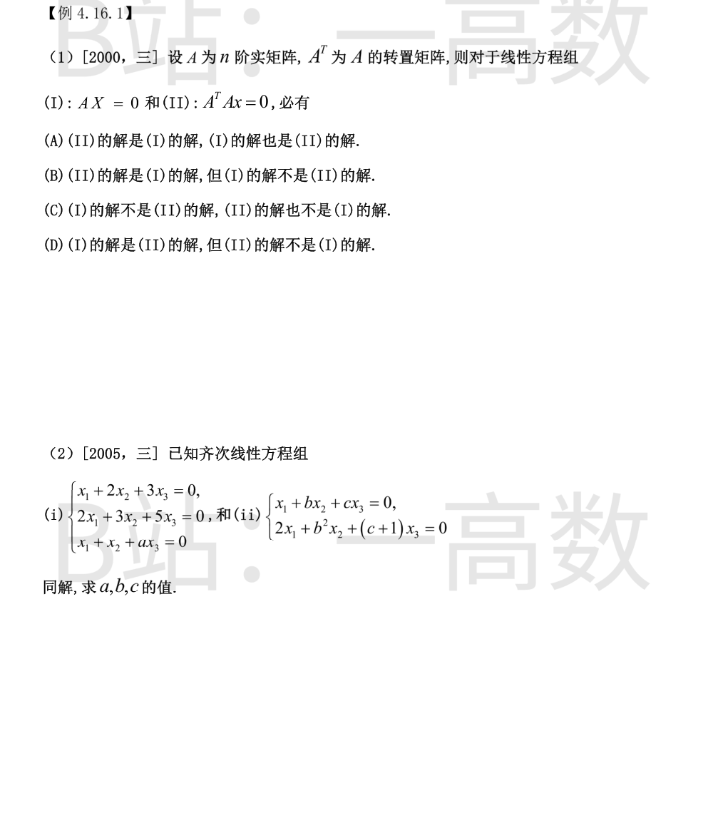
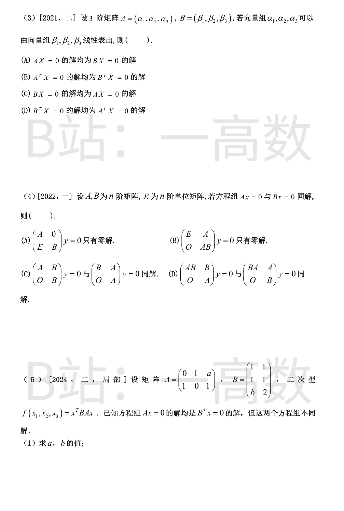
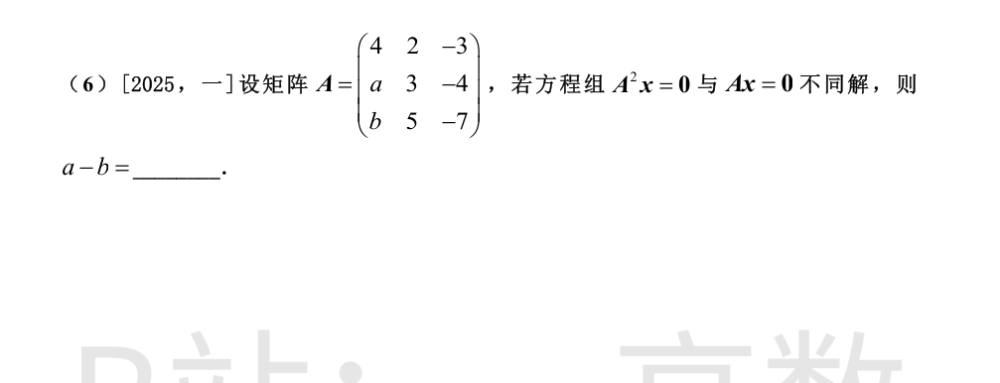
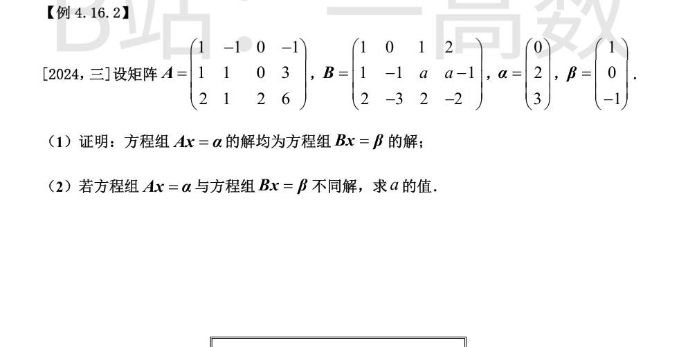
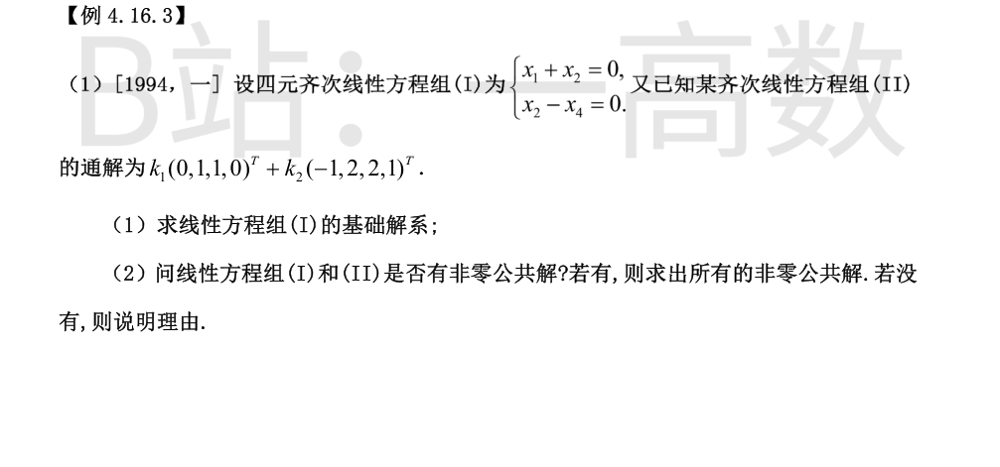
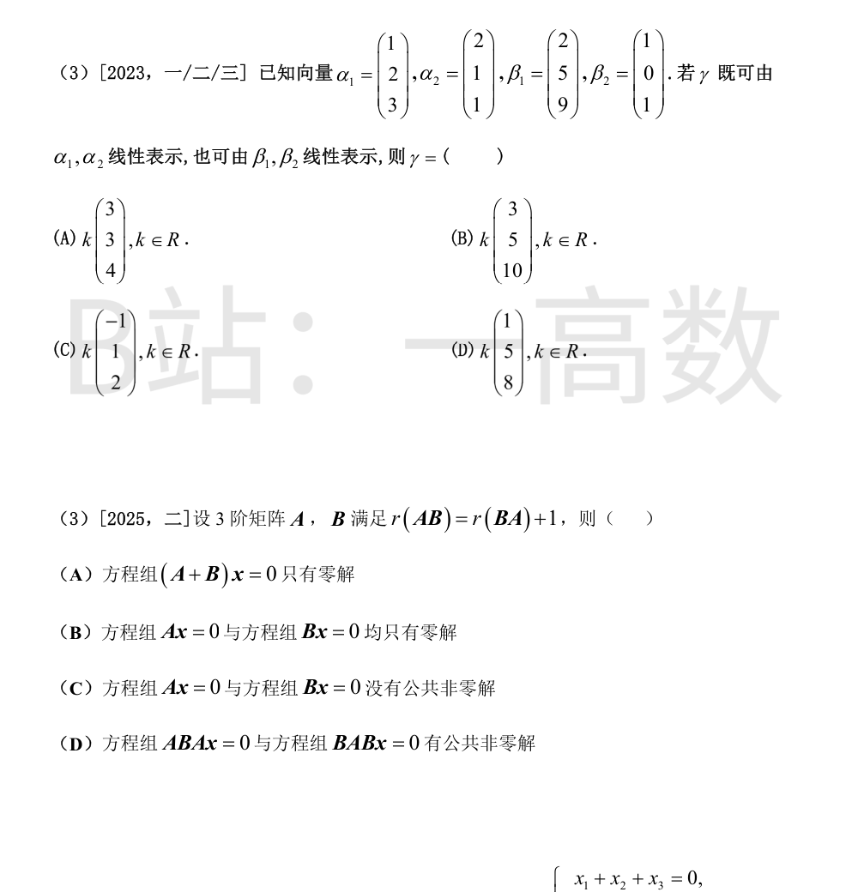
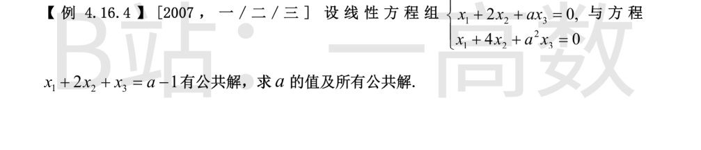

若 $AX=0$，则 $A^TAX=0$，(I) 的解都是 (II) 的解。\n\n反之若 $A^TAX=0$，左乘 $X^T$：$X^TA^TAX=\|AX\|^2=0$。由 $A$ 实矩阵，$\|AX\|^2=0\iff AX=0$，即 (II) 的解都是 (I) 的解。\n\n两方程组同解，选 (A)。
(ii) 只有 2 个方程，$r\leqslant2<3$，必有非零解；同解 $\Rightarrow$ (i) 也有非零解 $\Rightarrow$ (i) 的系数行列式为零：\n\n$$\begin{vmatrix}1&2&3\\2&3&5\\1&1&a\end{vmatrix}=2-a=0\Rightarrow a=2.$$\n\n$a=2$ 时解 (i)：$r_1-r_3$ 得 $x_2+x_3=0$；$r_2-2r_1$ 得 $-x_2-x_3=0$（相同）。故 $x_2=-x_3,\ x_1=-x_3$，解空间 $L(\eta)$，$\eta=(-1,-1,1)^T$。\n\n(i) 与 (ii) 同解 $\Rightarrow\eta$ 满足 (ii)：\n\n$$-1-b+c=0,\qquad -2-b^2+(c+1)=0\ \Rightarrow\ c=b+1,\ c=b^2+1.$$\n\n于是 $b+1=b^2+1\Rightarrow b(b-1)=0$。若 $b=0,c=1$：(ii) 两方程相同，解空间 2 维 $\neq$ (i) 的 1 维，舍去。故 $b=1,\ c=2$。此时 (ii) 为 $x_1+x_2+2x_3=0,\ 2x_1+x_2+3x_3=0$，秩 2，与 (i) 同为 1 维且解集相同，同解成立。
$\alpha$ 组可由 $\beta$ 组线性表出 $\iff$ 存在矩阵 $C$ 使 $A=BC$，从而 $A^T=C^TB^T$。\n\n若 $B^TX=0$，则 $A^TX=C^T(B^TX)=0$，故 $B^TX=0$ 的解都是 $A^TX=0$ 的解，(D) 成立。\n\n(A)：$AX=BCX=0$ 只能得 $CX\in N(B)$，推不出 $BX=0$（如 $B=E$ 时 $N(A)=N(C)$ 一般非零）。(C) 同理不成立。(B)：取 $A=O$（零向量组可由任何组表出），$N(A^T)=\mathbb{R}^3$ 不含于 $N(B^T)$，不成立。故选 (D)。
【仲裁修正】独立校验发现分歧，经仲裁重解，以本答案为准：A 的列可由 B 的列表示 \Leftrightarrow A=BM \Leftrightarrow B^T X=0 的解均为 A^T X=0 的解（(D)）；(C) 对应行向量关系，由列表示推不出
同解 $\Rightarrow N(A)=N(B)=:N$。\n\n(C)：第一个方程组等价于 $Bv=0$ 且 $Au=0$（第二行块 $Bv=0$ 代入第一行块 $Au+Bv=0$），解集为 $\{(u,v):u\in N(A),\ v\in N(B)\}=N\times N$；第二个等价于 $Av=0$ 且 $Bu=0$，解集 $\{(u,v):u\in N(B),\ v\in N(A)\}=N\times N$。两者相同，(C) 成立。\n\n(A)：取 $v=0,\ u\in N$ 非零（若 $r<n$），得非零解，不成立。\n\n(B)：对任意 $v\in N(B)=N$，取 $u=-Av$，则 $ABv=A(Bv)=0$ 且 $u+Av=0$，得非零解（$v\in N$ 非零时），不成立。\n\n(D) 反例：$n=2$，$A=\begin{pmatrix}0&1\\0&0\end{pmatrix},\ B=\begin{pmatrix}0&2\\0&0\end{pmatrix}$，则 $Ax=0$ 与 $Bx=0$ 同解（解均为 $span\{e_1\}$），且 $AB=BA=O$。第一个方程组：$Bv=0$ 且 $Av=0$，解集 $\mathbb{R}^2\times span\{e_1\}$（3 维）；第二个：$Av=0$ 且 $Bu=0$，解集 $span\{e_1\}\times span\{e_1\}$（2 维）。不同解，(D) 不成立。故选 (C)。
$A$ 的第 2、3 行相同，$r(A)=2$（第 1 行 $(0,1,a)$ 与 $(1,0,1)$ 不成比例），故 $Ax=0$ 的解空间为 1 维：$x_1+x_3=0,\ x_2+ax_3=0$，即 $span\{(-1,-a,1)^T\}$。\n\n$B^Tx=0$：$x_1+x_2+bx_3=0,\ x_1+x_2+2x_3=0$。\n\n若 $b\neq2$：两方程独立，$N(B^T)$ 为 1 维 $span\{(1,-1,0)^T\}$；$N(A)\subseteq N(B^T)$ 要求 $(-1,-a,1)$ 与 $(1,-1,0)$ 共线，但第三分量 $1\neq0$，不可能。\n\n故 $b=2$，两方程相同，$N(B^T)=\{x: x_1+x_2+2x_3=0\}$ 为 2 维。由 $N(A)\subseteq N(B^T)$：$(-1)^1+(-a)+2\cdot1=0\Rightarrow a=1$。此时 $\dim N(A)=1<2=\dim N(B^T)$，确实不同解。\n\n故 $a=1,\ b=2$。
对任何方阵 $N(A)\subseteq N(A^2)$（$Ax=0\Rightarrow A^2x=0$）。\n\n若 $|A|\neq0$，则 $Ax=0$ 仅零解且 $A$ 可逆推出 $A^2x=0$ 也仅零解，两方程组同解。故「不同解」$\Rightarrow$ $N(A)$ 含非零解 $\Rightarrow |A|=0$。\n\n$$|A|=\begin{vmatrix}4&2&-3\\a&3&-4\\b&5&-7\end{vmatrix}=4(-21+20)-2(-7a+4b)-3(5a-3b)=b-a-4,$$\n\n由 $|A|=0$ 得 $b-a=4$，即\n\n$$a-b=-4.$$\n\n（进一步分析：$b=a+4$ 时 $A^2$ 的 2 阶子式 $\begin{vmatrix}4-a&-1\\3a-16&2a-11\end{vmatrix}=-2(a-5)(a-6)$，仅 $a=5$（$b=9$）时 $r(A^2)=1<r(A)=2$，即不同解 $\iff a=5,b=9$，同样给出 $a-b=-4$。）

解 $Ax=\alpha$。消元：$r_2-r_1=(0,2,0,4|2)$，$r_3-2r_1=(0,3,2,8|3)$；$r_3-\frac32r_2=(0,0,2,2|0)$。同解方程组：\n\n$$x_2+2x_4=1,\qquad x_3+x_4=0,\qquad x_1-x_2-x_4=0\ \Rightarrow\ x_1=1-x_4,$$\n\n通解\n\n$$x=(1,1,0,0)^T+t(-1,-2,-1,1)^T.$$\n\n代入 $Bx$ 逐行验证（对任意 $a,t$）：\n\n$$\text{行1: } x_1+x_3+2x_4=(1-t)-t+2t=1=\beta_1;$$\n$$\text{行2: } x_1-x_2+ax_3+(a-1)x_4=(1-t)-(1-2t)-at+(a-1)t=t-at+at-t=0=\beta_2;$$\n$$\text{行3: } 2x_1-3x_2+2x_3-2x_4=2-2t-3+6t-2t-2t=-1=\beta_3.$$\n\n故 $Ax=\alpha$ 的全部解都满足 $Bx=\beta$，证毕。
由 (1)，$Ax=\alpha$ 的解集恒含于 $Bx=\beta$ 的解集，故「不同解」$\iff$ 后者严格更大。\n\n消元 $[B|\beta]$：$r_3-2r_1=(0,-3,0,-6|-3)\to(0,1,0,2|1)$；$r_2-r_1=(0,-1,a-1,a-3|-1)$；$r_2+r_3'=(0,0,a-1,a-1|0)$：\n\n$$[B|\beta]\to\begin{pmatrix}1&0&1&2&1\\0&1&0&2&1\\0&0&a-1&a-1&0\end{pmatrix}$$\n\n若 $a\neq1$：$r(B)=r(\bar B)=3=r(A)$，且 $x_3+x_4=0$，解出的通解与 $Ax=\alpha$ 的完全相同，两方程组同解。\n\n若 $a=1$：$r(B)=2$，$Bx=\beta$ 即 $x_2+2x_4=1,\ x_1+x_3+2x_4=1$，解集为 2 维 $\{(1,1,0,0)^T+s(-1,0,1,0)^T+t(-2,-2,0,1)^T\}$，严格包含 $Ax=\alpha$ 的 1 维解集，两方程组不同解。\n\n故 $a=1$。


(I) 的系数矩阵 $A=\begin{pmatrix}1&1&0&0\\0&1&0&-1\end{pmatrix}$，$r(A)=2$，$n=4$，基础解系含 2 个向量。\n\n同解方程组：$x_1=-x_2,\ x_4=x_2$，$x_2,x_3$ 为自由量。取 $(x_2,x_3)=(1,0),(0,1)$：\n\n$$\xi_1=(-1,1,0,1)^T,\qquad \xi_2=(0,0,1,0)^T.$$
(II) 的通解向量为 $x=k_1(0,1,1,0)^T+k_2(-1,2,2,1)^1=(-k_2,\ k_1+2k_2,\ k_1+2k_2,\ k_2)$。代入 (I)：\n\n$$x_1+x_2=-k_2+k_1+2k_2=k_1+k_2=0,\qquad x_2-x_4=k_1+2k_2-k_2=k_1+k_2=0,$$\n\n两条件同为 $k_1=-k_2$。取 $k_1=-k_2=c$：\n\n$$x=c(-1,1,1,1)^T.$$\n\n验证：$(-1,1,1,1)$ 满足 (I)（$-1+1=0,\ 1-1=0$），且 $=(-1,2,2,1)+(0,-1,-1,0)=\eta_2-(\eta_1)$ 属于 (II) 的解空间（如 $k_1=-1,k_2=1$）。故存在非零公共解，全部非零公共解为 $x=c(-1,1,1,1)^T,\ c\neq0$。
【仲裁修正】独立校验发现分歧，经仲裁重解，以本答案为准：solver 所答 c(-1,1,1,1)^T 是上一小题(2)问的公共解，答非所问（错位）；A、B 一致给出本题正确选项 (D)
设 $x_1\alpha_1+x_2\alpha_2=y_1\beta_1+y_2\beta_2$，按分量：\n\n$$\begin{cases}x_1+2x_2=2y_1+y_2\\ 2x_1+x_2=5y_1\\ 3x_1+x_2=9y_1+y_2\end{cases}$$\n\n(3)$-$(1)：$2x_1-x_2=7y_1$，故 $x_2=2x_1-7y_1$；代入 (2)：$4x_1-7y_1=5y_1\Rightarrow x_1=3y_1,\ x_2=-y_1$；代回 (1)：$3y_1-2y_1-2y_1-y_2=0\Rightarrow y_2=-y_1$。\n\n取 $y_1=t$：$\gamma=3t\,\alpha_1-t\,\alpha_2=t(1,5,8)^T$（同时 $=t\beta_1-t\beta_2=t(1,5,8)^T$，验证一致）。\n\n故 $\gamma=k(1,5,8)^T$，选 (D)。
先估秩：$r(AB)=r(BA)+1\leqslant3$。若 $r(AB)=3$，则 $r(A)=r(B)=3$，$A,B$ 可逆，得 $r(BA)=3$，矛盾。故 $r(AB)\leqslant2,\ r(BA)\leqslant1$。\n\n于是 $r(ABA)\leqslant r(BA)\leqslant1$，$r(BAB)\leqslant r(BA)\leqslant1$（因 $ABA=A\cdot(BA)$，$BAB=(BA)\cdot B$）。故\n\n$$\dim N(ABA)=3-r(ABA)\geqslant2,\qquad \dim N(BAB)\geqslant2,$$\n\n两个 3 维空间中维数 $\geqslant2$ 的子空间之交维数 $\geqslant2+2-3=1$，即存在非零 $x$ 同时满足 $ABAx=0$ 与 $BABx=0$。(D) 成立。\n\n反例否定 (A)(B)(C)：取 $A=\begin{pmatrix}0&1&0\\0&1&0\\1&0&0\end{pmatrix},\ B=\mathrm{diag}(1,1,0)$。则 $N(A)=N(B)=span\{e_3\}$，$AB$（$A$ 去掉第 3 列所在作用）秩 2，$BA$（$A$ 第三行置零）秩 1，满足 $r(AB)=r(BA)+1$。但 (A)：$A+B$ 第 3 列为零列，有非零解；(B)：$Ax=0$ 与 $Bx=0$ 都有非零解 $e_3$；(C)：$e_3$ 就是公共非零解。均不成立。故选 (D)。
【仲裁修正】独立校验发现分歧，经仲裁重解，以本答案为准：题面截断：A 未作答、B 自述无法作答，无从仲裁；solver 的孤立 "(D)" 疑为上一题顺延的错位答案，需人工复核原题

(I) 的系数行列式为范德蒙德行列式（节点 $1,2,a$）：$|A_I|=(2-1)(a-1)(a-2)=(a-1)(a-2)$。\n\n① $a\neq1,2$：(I) 只有零解 $x=0$；代入 (II) 得 $0=a-1$，矛盾，无公共解。\n\n② $a=1$：(I) 三方程为 $x_1+x_2+x_3=0,\ x_1+2x_2+x_3=0,\ x_1+4x_2+x_3=0$，相减得 $x_2=0$，解 $x=k(1,0,-1)^T$；(II) 即 $x_1+2x_2+x_3=0$，与 (I) 的解自动相容。故全部公共解 $x=k(1,0,-1)^T$。\n\n③ $a=2$：(I) 化为 $x_1+x_2+x_3=0,\ x_2+x_3=0$（后两式与它相容），解 $x=k(0,1,-1)^T$；代入 (II)：$0+2k-k=k=a-1=1$，得 $k=1$。故公共解 $x=(0,1,-1)^T$。
【仲裁修正】独立校验发现分歧，经仲裁重解，以本答案为准：A 多出 a=0 情形（此时 (I) 仅零解，(0,0,-1)^T 不满足 (II) x_1+2x_2+x_3=a-1=-1）且漏掉 a=2；联立消元得公解条件 -(a-1)(a-2)=0，2007 原题官方答案即 a=1、a=2 两情形，solver 与 B（按原题）正确